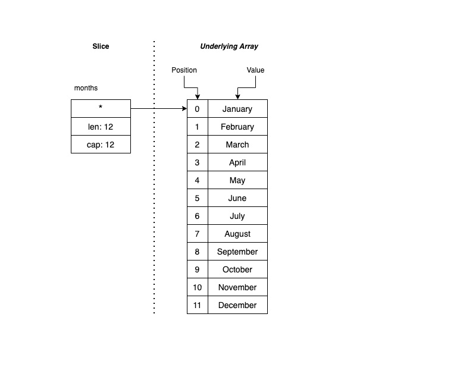
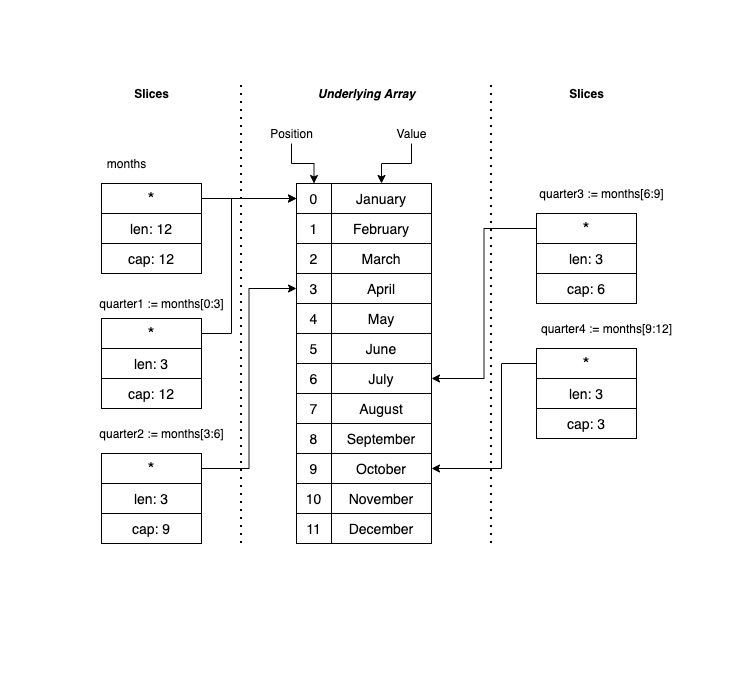

了解切片
我们在上一部分了解了数组，而且我们说到数组是切片和映射的基础。 你稍后就会明白是为什么。 与数组一样，切片也是 Go 中的一种数据类型，它表示一系列类型相同的元素。 不过，与数组更重要的区别是切片的大小是动态的，不是固定的。
切片只是名为基础数组的数组之上的一种数据结构。 通过切片，可访问整个基础数组，也可仅访问部分元素。
切片只有 3 个组件：
- 指针，指向基础数组可访问的第一个元素（并非一定是数组的第一个元素）。
- 长度，指示切片中的元素数目。
- 容量，显示切片开头与基础数组结束之间的元素数目。
下图显示了什么是切片：

请注意，切片只是基础数组的一个子集。 让我们看看如何用代码来表示上述图像。
声明和初始化切片
要声明切片，可采用与声明数组相同的方式操作。 例如，以下代码表示你在切片图像中看到的内容：
package main
import "fmt"
func main() {
months := []string{"January", "February", "March", "April", "May", "June", "July", "August", "September", "October", "November", "December"}
fmt.Println(months)
fmt.Println("Length:", len(months))
fmt.Println("Capacity:", cap(months))
}
运行代码时，你会看到以下输出：
[January February March April May June July August September October November December]
Length: 12
Capacity: 12
请注意目前，切片与数组的区别不大。 可用相同的方式声明这两者。 若要从切片中获取信息，可使用内置函数 len() 和 cap()。 我们将继续使用这些函数来确认切片可具有来自基础数组的若干后续元素。
切片项
Go 支持切片运算符 s[i:j]，其中：
s表示数组。i表示指向它将使用的数组（或另一切片）的第一个元素的指针。j表示切片将使用的最后一个元素的位置。
换句话说，切片只能引用元素的子集。
例如，假设需要 4 个变量来表示一年的每个季度。 下图说明了它在 Go 中的显示效果：

若要用代码表示在上图中看到的内容，可使用以下代码：
package main
import "fmt"
func main() {
months := []string{"January", "February", "March", "April", "May", "June", "July", "August", "September", "October", "November", "December"}
quarter1 := months[0:3]
quarter2 := months[3:6]
quarter3 := months[6:9]
quarter4 := months[9:12]
fmt.Println(quarter1, len(quarter1), cap(quarter1))
fmt.Println(quarter2, len(quarter2), cap(quarter2))
fmt.Println(quarter3, len(quarter3), cap(quarter3))
fmt.Println(quarter4, len(quarter4), cap(quarter4))
}
运行代码时，你会获得以下输出：
[January February March] 3 12
[April May June] 3 9
[July August September] 3 6
[October November December] 3 3
请注意，切片的长度不变，但容量不同。 我们来了解 quarter2 切片。 声明此切片时，你指出希望切片从位置编号 3 开始，最后一个元素位于位置编号 6。 切片长度为 3 个元素，但容量为 9，原因是基础数组有更多元素或位置可供使用，但对切片而言不可见。 例如，如果你尝试打印出类似 fmt.Println(quarter2[3]) 的内容，会出现以下错误：panic: runtime error: index out of range [3] with length 3。
切片容量仅指出切片可扩展的程度。 因此，你可从 quarter2 创建扩展切片，如下例所示：
package main
import "fmt"
func main() {
months := []string{"January", "February", "March", "April", "May", "June", "July", "August", "September", "October", "November", "December"}
quarter2 := months[3:6]
quarter2Extended := quarter2[:4]
fmt.Println(quarter2, len(quarter2), cap(quarter2))
fmt.Println(quarter2Extended, len(quarter2Extended), cap(quarter2Extended))
}
运行上述代码时，你会获得以下输出：
[April May June] 3 9
[April May June July] 4 9
请注意在声明 quarter2Extended 变量时，无需指定初始位置 ([:4])。 执行此操作时，Go 会假定你想要切片的第一个位置。 你可对最后一个位置 ([1:]) 执行相同的操作。 Go 将假定你要引用所有元素，直到切片的最新位置 (len()-1)。
追加项
现在，我们了解了切片的工作原理及其与数组的相似之处，接下来了解它们与数组的区别。 第一个区别是切片的大小不是固定的，而是动态的。 创建切片后，可向其添加更多元素，这样切片就会扩展。 稍后你将了解基础数组发生的情况。
Go 提供了内置函数 append(slice, element)，便于你向切片添加元素。 你需要将要修改的切片和要追加的元素作为值发送给该函数。 然后，append 函数会返回一个新的切片，你需要将其存储在变量中。 对于要更改的切片，变量可能相同。
让我们看看这在代码中的显示效果：
package main
import "fmt"
func main() {
var numbers []int
for i := 0; i < 10; i++ {
numbers = append(numbers, i)
fmt.Printf("%d\tcap=%d\t%v\n", i, cap(numbers), numbers)
}
}
运行上述代码时，你应会看到以下输出：
0 cap=1 [0]
1 cap=2 [0 1]
2 cap=4 [0 1 2]
3 cap=4 [0 1 2 3]
4 cap=8 [0 1 2 3 4]
5 cap=8 [0 1 2 3 4 5]
6 cap=8 [0 1 2 3 4 5 6]
7 cap=8 [0 1 2 3 4 5 6 7]
8 cap=16 [0 1 2 3 4 5 6 7 8]
9 cap=16 [0 1 2 3 4 5 6 7 8 9]
这个输出很有趣，对吧？ 特别是对于调用 cap() 函数所返回的内容。 一切看起来都很正常，直到第 3 次迭代，此时容量变为 4，切片中只有 3 个元素。 在第 5 次迭代中，容量又变为 8，第 9 次迭代时变为 16。
你注意到容量输出中的模式了吗？ 当切片容量不足以容纳更多元素时，Go 的容量将翻倍。 这意味着它将新建一个具有新容量的基础数组。 无需执行任何操作即可使容量增加。 Go 会自动扩充容量。 需要谨慎操作，原因是有时一个切片具有的容量可能比它需要的多得多，这样你将会浪费内存。
删除项
你可能想知道，删除元素会怎么样呢？ Go 没有内置函数用于从切片中删除元素。 可使用上述切片运算符 s[i:j] 来新建一个仅包含所需元素的切片。
例如，以下代码会从切片中删除元素：
package main
import "fmt"
func main() {
letters := []string{"A", "B", "C", "D", "E"}
remove := 2
fmt.Println("Before", letters)
letters[remove] = letters[len(letters)-1]
letters = letters[:len(letters)-1]
fmt.Println("After", letters)
}
运行上述代码时，你会获得以下输出：
Before [A B C D E]
After [A B E D]
若要从切片中删除元素，上述代码会将你想要删除的元素替换为切片的最新元素。 然后，它会新建一个不包含最后一个元素的切片。
另一种方法是创建新的切片副本，但我们还没介绍副本创建方式，因此我们来看一下。
创建切片的副本
Go 具有内置函数 copy(dst, src []Type) 用于创建切片的副本。 你需要发送目标切片和源切片。 例如，你可如下例所示创建一个切片副本：
slice2 := make([]string, 3)
copy(slice2, letters[1:4])
为何要创建副本？ 更改切片中的元素时，基础数组将随之更改。 引用该基础数组的任何其他切片都会受到影响。 让我们在代码中看看显示效果，然后创建一个切片副本来解决此问题。
使用下述代码确认切片指向数组，而你在切片中所做的每个更改都会影响基础数组。
package main
import "fmt"
func main() {
letters := []string{"A", "B", "C", "D", "E"}
fmt.Println("Before", letters)
slice1 := letters[0:2]
slice2 := letters[1:4]
slice1[1] = "Z"
fmt.Println("After", letters)
fmt.Println("Slice2", slice2)
}
运行上述代码时，你会看到以下输出：
Before [A B C D E]
After [A Z C D E]
Slice2 [Z C D]
请注意对 slice1 所做的更改如何影响 letters 数组和 slice2。 可在输出中看到字母 B 已替换为 Z，它会影响指向 letters 数组的每个切片。
若要解决此问题，你需要创建一个切片副本，它会在后台生成新的基础数组。 可以使用以下代码：
package main
import "fmt"
func main() {
letters := []string{"A", "B", "C", "D", "E"}
fmt.Println("Before", letters)
slice1 := letters[0:2]
slice2 := make([]string, 3)
copy(slice2, letters[1:4])
slice1[1] = "Z"
fmt.Println("After", letters)
fmt.Println("Slice2", slice2)
}
运行上述代码时，你会看到以下输出：
Before [A B C D E]
After [A Z C D E]
Slice2 [B C D]
请注意 slice1 中的更改如何影响基础数组，但它并未影响新的 slice2。